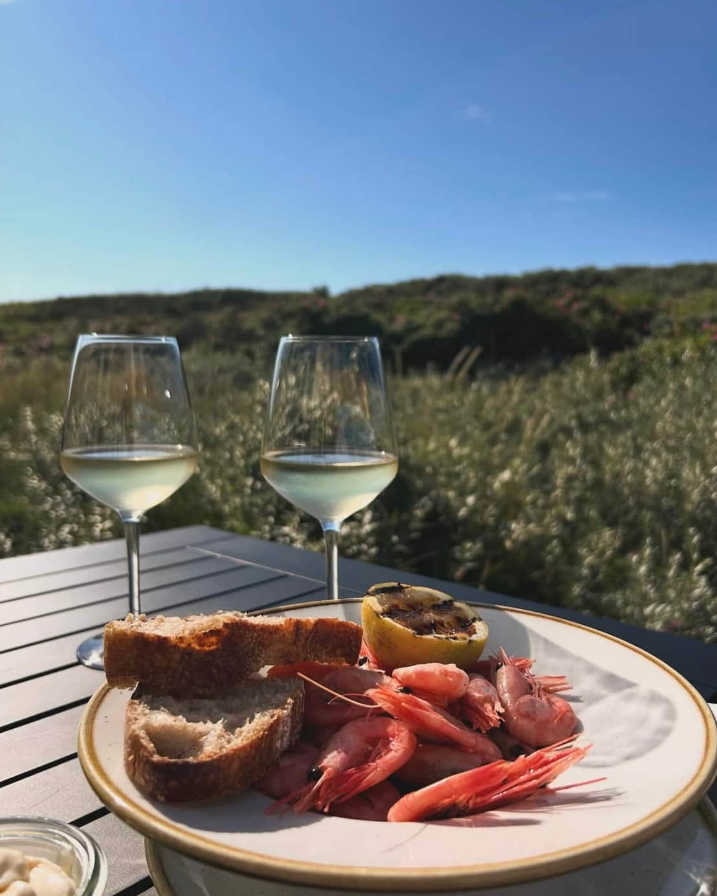
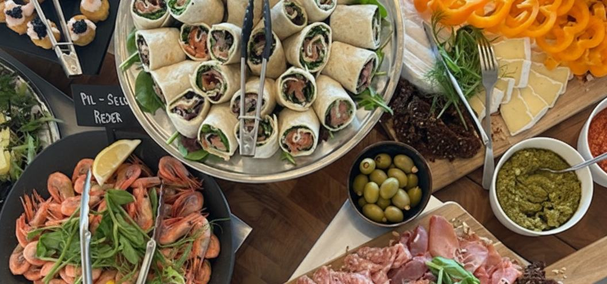

Fra havet til bord
Friske råvarer tilberedt med omtanke
Se menu

Friske råvarer tilberedt med omtanke
Se menu
Din tryghed og dine behov er vigtige for os. Spørg vores personale om allergener i vores mad, før du afgiver din bestilling. Hvad enten du ønsker en vegetarisk, vegansk eller glutenfri ret, står vi klar til at hjælpe.
Køkkenet lukker for servering af mad kl 20:00. Vi takker for forståelsen.
Forkæl dig selv med Mallemukkens lækre buffet! Den bugner af dejlige retter - røget fisk, fiske- og kødretter, salater, tapas, pålæg og gode oste. Buffeten serveres hele juli måned samt udvalgte datoer - se herunder hvornår
*Ændringer kan forekomme
*5/6 (Farsdag), Tappasbuffet 17:30-20:00,
*6/6 buffet 11:30-14-30 & 17:30-20:00,
*20/6
(Rasmusklumps
75 års fødselsdag), pandekagebuffet 11:30-14-30 & 17:30-20:00
Frokostbuffet 249,-
Aftenbuffet 299,-
Børn u/12 119,-
Børn u/3 0,-
Allergener - Spørg personalet om allergener og særlige kostbehov.
God buffetkultur - Tag gerne flere gange, men kun det du kan spise. Sammen mindsker vi madspild.
